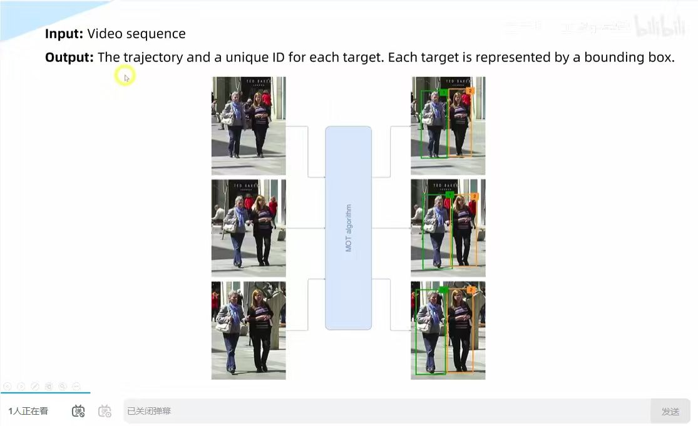
技术解析：此图直观地展示了多目标跟踪 (MOT) 系统的黑盒模型：
1. Input (输入)：视频序列 (Video sequence)，包含了连续的时间维度信息。
2. MOT Algorithm (核心处理)：这是系统的核心，负责将原始视频转化为结构化的感知结果。
3. Output (输出)：
- Bounding Box：每个物体的空间位置表示。
- Unique ID：跨帧维持身份一致性的关键标识符（如图中 ID 1 与 ID 2）。
- Trajectory：基于 ID 随时间生成的运动轨迹。
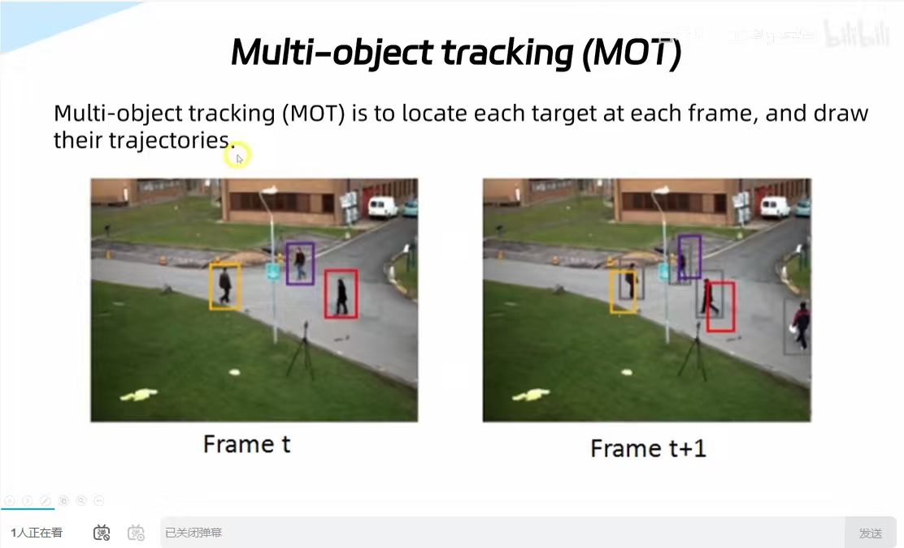
技术解析：该页面给出了 MOT 最本质的定义，即在时域上维持目标的身份统一性。
1. 定位 (Localization)：在 `Frame t` 和 `Frame t+1` 的每一帧中，准确捕捉行人的坐标与边界框。
2. 轨迹维持 (Trajectory Drawing)：核心难点在于跨帧的 ID 一致性。如图所示，同一行人在 `Frame t` 和 `Frame t+1` 中被分配了相同的颜色框（如黄色、红色），意味着 MOT 算法成功识别出了这是同一个物体。
3. 关键挑战：当行人距离接近或发生遮挡时，跟踪器必须利用动力学模型（如卡尔曼滤波）预判其移动趋势，以防止 ID 混淆或追踪丢失。
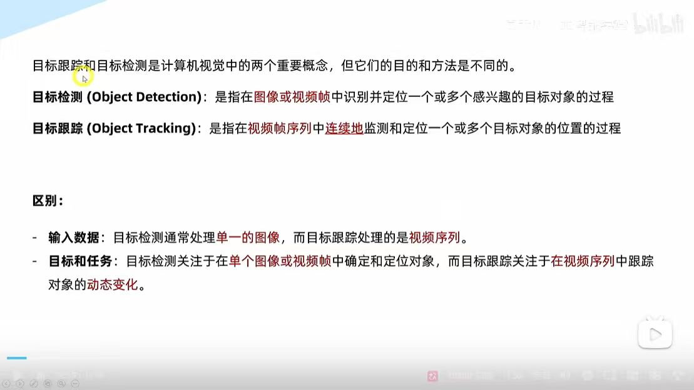
技术解析：此页面清晰界定了两者在计算机视觉中的不同定位：
1. 输入维度：目标检测处理的是单帧静态图像，旨在获取空间信息；目标跟踪处理的是视频序列，核心在于获取时序连贯性。
2. 任务目标：检测关注物体是否存在及位置；跟踪关注物体的动态变化与 ID 持续性（即“我是谁，我从哪来，去往何处”）。
3. 依赖关系：在主流 Tracking-by-Detection 范式中，跟踪器高度依赖检测器提供的每帧坐标，二者结合构成了自动驾驶感知层的全貌。
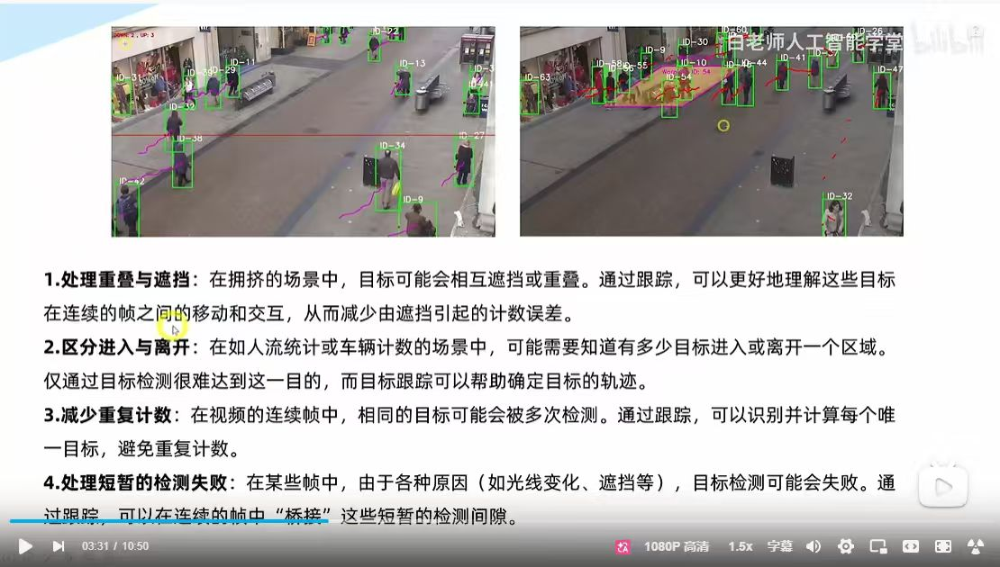
技术解析：该页面总结了目标跟踪 (Object Tracking) 在实际感知链路中弥补目标检测 (Object Detection) 不足的四个关键维度：
1. 处理重叠与遮挡 (Occlusion Handling)：利用轨迹的连续性，在目标暂时被遮挡时，通过动力学模型保持其 ID，避免因检测丢失而导致跟踪中断。
2. 流量分析 (Entry/Exit Analysis)：通过对目标轨迹的跨帧追踪，不仅能识别“谁”，还能精准判断其“从哪进入”和“往哪离开”，实现流量行为闭环。
3. 唯一性去重 (Deduplication)：在连续帧中，同一个目标会被重复检测多次；跟踪器通过唯一 ID 分配，确保感知结果向下游模块输出时是“唯一且去重”的。
4. 桥接检测空隙 (Gap Bridging)：利用时序信息填补检测器在光照剧变或边缘抖动导致的短时失效，保障感知链路的鲁棒性。
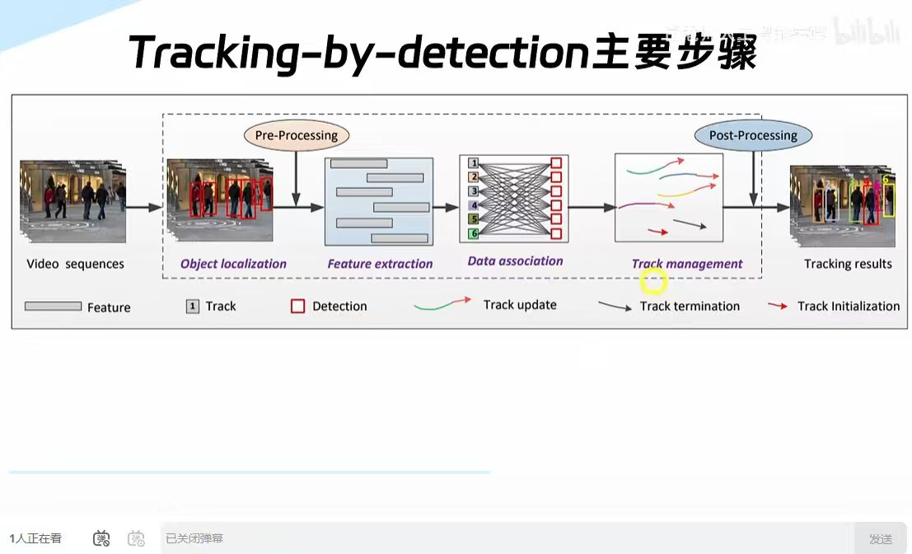
技术解析：此流程展示了自动驾驶视觉感知的核心闭环，可拆解为五个关键阶段：
1. Object Localization (检测)：在 Video sequences 的每一帧中定位目标，获取初始 Bounding Box。
2. Feature Extraction (特征提取)：为每个检测到的目标提取外观特征 (Re-ID)，用于后续跨帧辨别。
3. Data Association (数据关联)：这是核心步骤，利用匈牙利算法等匹配当前检测框与历史追踪序列 (Track) 的相似度。
4. Track Management (轨迹管理)：这是系统的控制中心，负责 Track Initialization（初始化新目标）、Track Update（更新位置/姿态）、以及 Track Termination（删除消失/重叠目标）。
5. Tracking Results：最终输出具有唯一 ID 的时序运动结果。
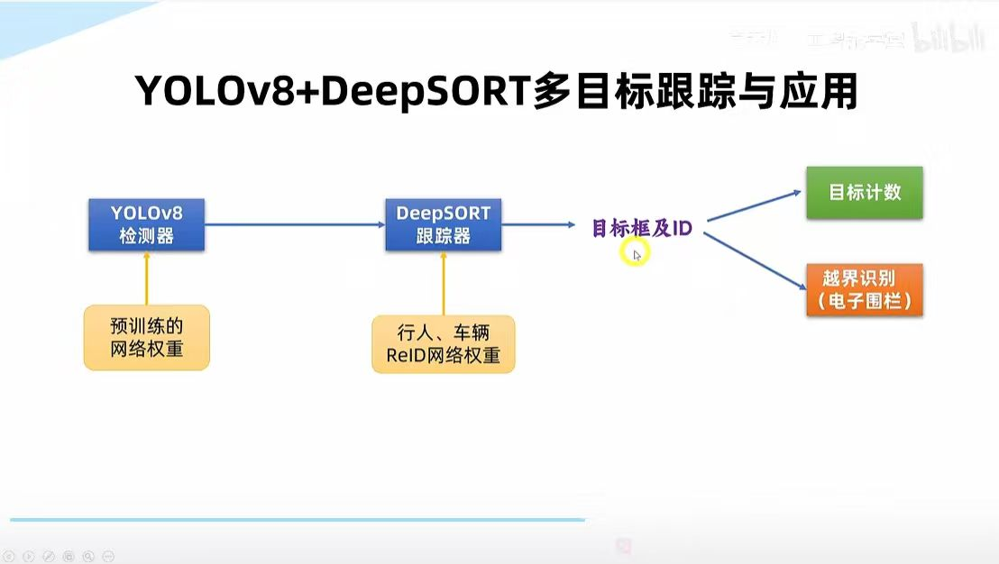
技术解析：这是目前工程落地中最经典的感知追踪 Pipeline，其优势在于将“高精度检测”与“鲁棒性关联”解耦：
1. 感知端 (YOLOv8)：利用预训练的网络权重进行实时目标提取，输出候选目标及其类别。
2. 追踪端 (DeepSORT)：引入 ReID 网络（行人/车辆外观特征提取），结合卡尔曼滤波进行多目标的跨帧匹配，生成稳定的目标 ID。
3. 下游应用 (Application)：将“目标框+ID”序列实时映射至业务逻辑：
- 目标计数：利用 ID 的生命周期记录进入/离开特定检测线的物体总数。
- 越界识别 (电子围栏)：通过几何坐标判断当前 ID 轨迹是否处于预定义的禁区 (Polygon) 内，实现高效的入侵检测。
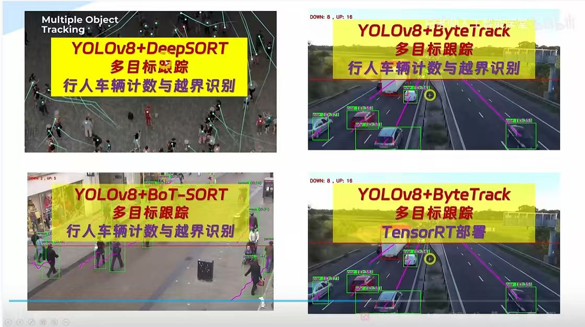
技术解析：此页面展示了 YOLOv8 在不同工程场景下的组合方案，针对算力与精度进行了差异化选型：
1. DeepSORT： 引入外观 ReID 特征，适用于目标特征差异较大、场景遮挡较复杂的环境。
2. ByteTrack： 当前工业界最流行的关联方案，通过处理低分检测框极大提升了鲁棒性，且计算复杂度极低，非常适合实时计数与越界识别。
3. BoT-SORT： 综合了相机运动补偿 (Camera Motion Compensation) 与外观特征，在复杂摄像机运动场景（如车载相机）下具有更高的 ID 稳定性。
4. TensorRT 部署： 本图右侧展示了经过 TensorRT 加速后的流水线，这是实现车载边缘侧高帧率部署的必经之路，能够显著降低模型推理延迟。
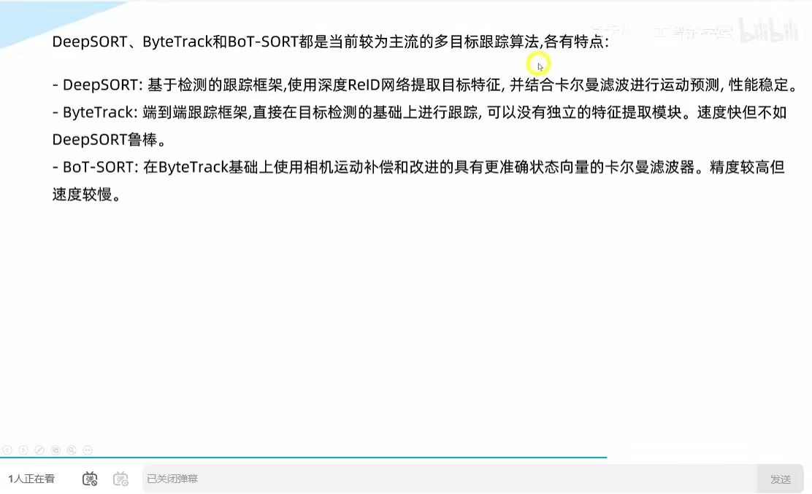
技术解析：此对比总结了当前工业界三类主流算法的核心折衷 (Trade-offs)：
1. DeepSORT (精度稳定型)： 引入深度 ReID 特征匹配，有效解决了长时目标遮挡带来的 ID 抖动问题，适合对识别一致性要求极高的安防场景。
2. ByteTrack (效率优先型)： 放弃了昂贵的特征提取，通过巧妙地关联低置信度检测框，将关联逻辑简化为位置 IoU 匹配，是目前车载边缘计算平台的主流方案。
3. BoT-SORT (综合强化型)： 在 ByteTrack 的基础上，增加了相机运动补偿与更精细的卡尔曼滤波状态更新，极大地提升了在高动态、剧烈位移场景下的轨迹平滑度。
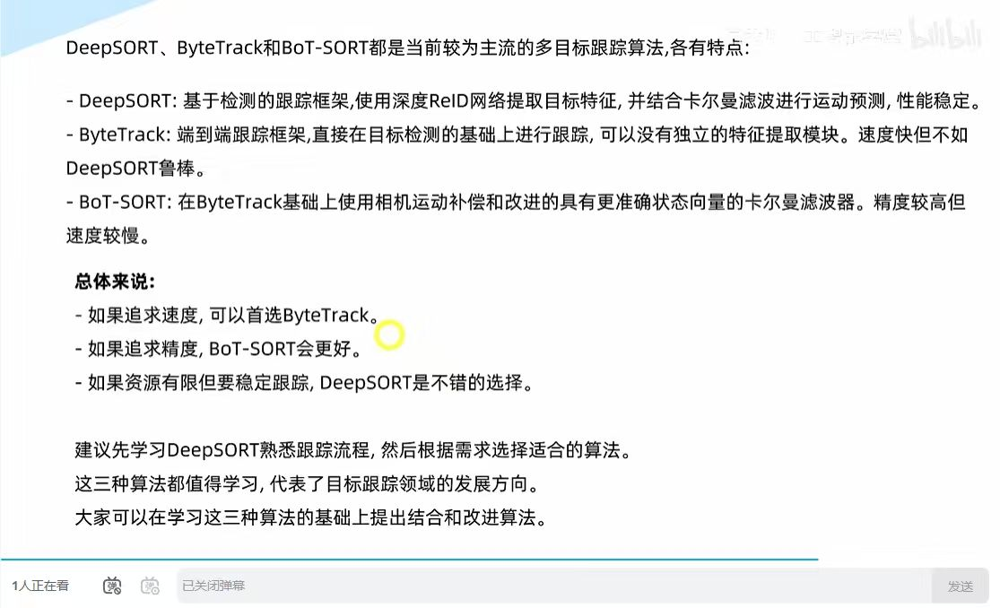
技术解析：此页面总结了 MOT 领域的演进方向与选型决策逻辑：
1. ByteTrack (速度优先)： 无独立特征提取模块，适合对实时性要求极高、资源受限的边缘计算场景。
2. BoT-SORT (精度优先)： 通过相机运动补偿 (CMC) 与精确状态更新，克服了剧烈位移下的 ID 跳变，适合对感知结果一致性要求极高的场景。
3. DeepSORT (资源稳定平衡)： 经典的学术与工业结合方案，在资源受限但需要一定 ReID 鲁棒性的场景中依然具备生命力。
学习路线建议：从 DeepSORT 入手掌握数据关联与卡尔曼滤波的完整流程，进而通过 ByteTrack 深入理解轻量级关联逻辑，最后通过 BoT-SORT 探索感知系统的精细化改进方向。
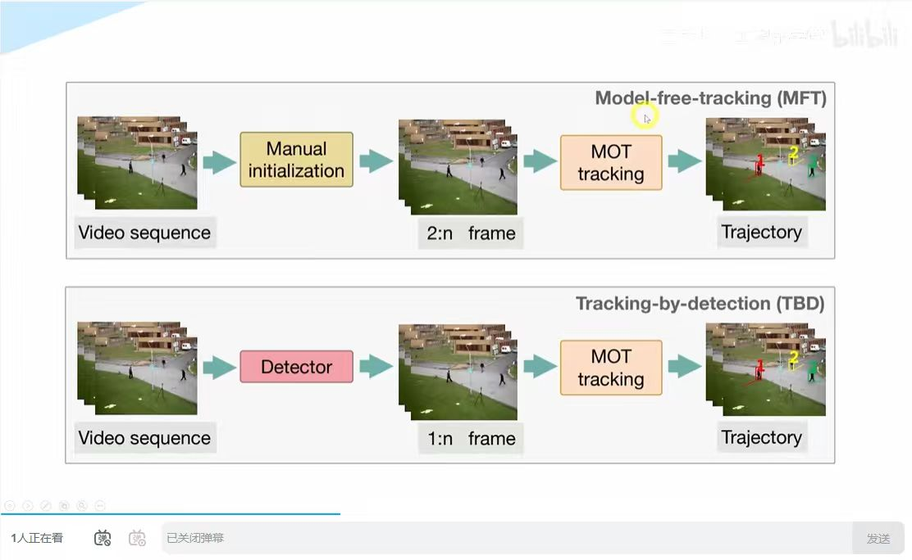
技术解析：此页面对比了目标跟踪领域两种截然不同的架构逻辑：
1. Model-free Tracking (MFT)：
- 机制：依赖 Manual initialization（人工初始框选），后续完全依靠相关滤波或光流法进行外推。
- 局限：难以处理目标的进入/离开，且一旦发生跟丢（Drift）无法自动恢复，适用于受控的小范围单目标跟踪场景。
2. Tracking-by-detection (TBD)：
- 机制：采用 Detector 在每一帧进行实时感知，再通过关联算法进行 ID 匹配。
- 优势：系统具备自愈能力 (Self-healing)，能够处理目标的自动进入、离开及遮挡后的重新识别 (Re-identification)，是当前自动驾驶等复杂环境 MOT 的事实标准。
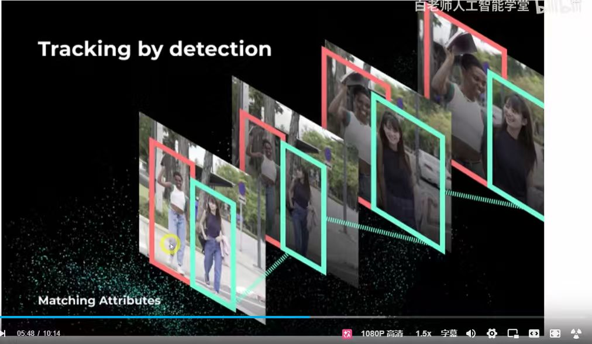
技术解析：此页面揭示了多目标跟踪关联阶段的本质——跨帧身份辨识 (Re-Identification)：
1. 关联机制：系统不仅依赖框的位置 (IoU)，更通过提取目标的视觉属性 (Matching Attributes)，如衣着颜色、外形轮廓等特征向量。
2. 轨迹连通性：图中展示了同一目标在不同帧之间通过虚线相连，这代表了算法在通过属性匹配确定该目标是否为同一身份。
3. 核心难点：当出现多个类似装束的目标或发生严重遮挡时，仅靠外观属性匹配极易出错。因此，现代 MOT 算法通常结合动力学预测 (Kalman Filter) 与外观特征 (Re-ID Embedding) 进行级联加权匹配，以确保跟踪的鲁棒性。
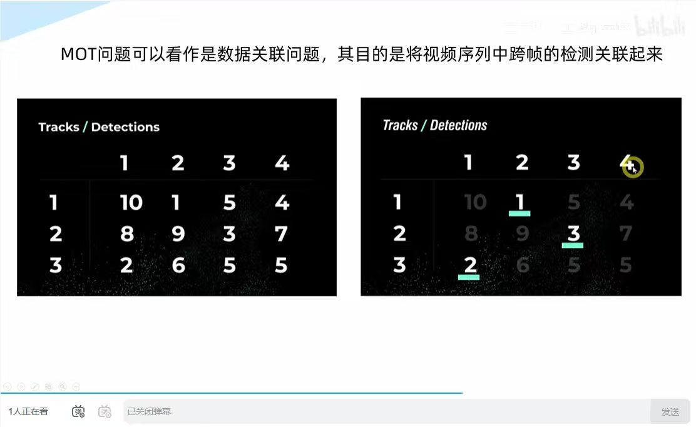
技术解析：正如该页所述，MOT 的核心本质是数据关联问题，即在 Track（已存在的追踪轨迹）与 Detection（当前帧检测结果）之间建立最佳对应关系：
1. 矩阵建模：图中展示了一个典型的关联代价矩阵 (Cost Matrix)。行代表 Track (1, 2, 3)，列代表 Detection (1, 2, 3, 4)。矩阵中的数值代表两者间的距离（如 IoU 距离、外观特征相似度距离）。
2. 匈牙利算法 (Hungarian Algorithm)：数据关联的目标是寻找一个最佳匹配方案（如图中绿色下划线所示），使得总代价最小化，即找到全局最优的 ID 分配策略。
3. 工程意义：
- ID 关联：通过这一过程，确保了上一帧的 ID 1 能够准确对应到当前帧的目标。
- 增删与冲突处理：未匹配的 Detection 触发新 ID 生成，未匹配的 Track 则进入“失踪计数”逻辑。
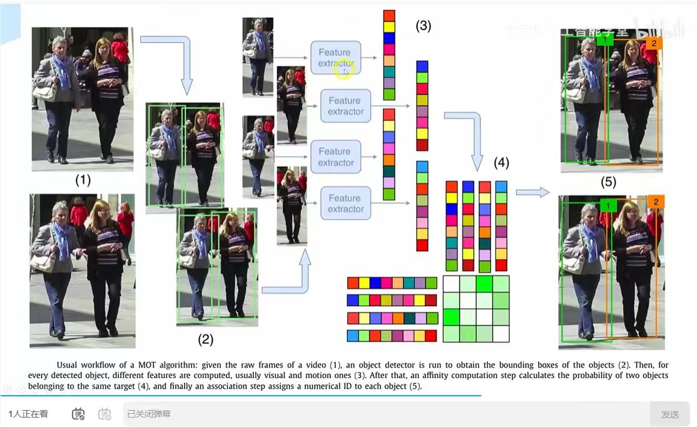
技术解析：此图展现了一个经典的 Tracking-by-Detection 五步工作流，这是自动驾驶感知链路的教科书式标准：
1. Input (1)：采集原始视频帧序列。
2. Detection (2)：运行物体检测器 (Object Detector) 获取候选目标的 Bounding Boxes。
3. Feature Extraction (3)：对每个检测框内的目标提取外观特征 (Visual Appearance Features) 及运动特征 (Motion Features)。
4. Affinity Computation (4)：计算“相似度矩阵”(Affinity Matrix)，评估两个检测结果属于同一目标的概率。
5. Association (5)：执行 ID 分配 (ID Assignment)，将唯一 ID 绑定到每个物体上，完成跨帧身份关联。
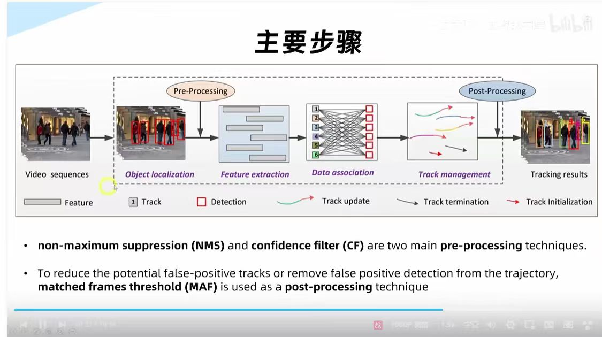
技术解析：为了在复杂的真实场景中减少噪声，MOT 系统在核心链路之外引入了精细的优化技术：
1. 预处理技术 (Pre-Processing)：
- NMS (非极大值抑制)：剔除检测结果中重复的冗余边界框，保证同一物体只产生一个候选框。
- CF (置信度过滤)：设定阈值，直接滤除检测器输出的低置信度候选结果，大幅降低数据关联阶段的噪声干扰。
2. 后处理技术 (Post-Processing)：
- MAF (匹配帧阈值，Matched Frames Threshold)：这是剔除伪阳性轨迹的关键。它要求一条轨迹必须成功匹配到一定数量的帧，才被视为“有效轨迹”；若某轨迹持续未得到有效匹配，则被视为假阳性检测直接剔除。
3. 工程意义：通过这些优化，MOT 系统成功过滤了检测器带来的“误报”与“漏报”，显著提升了感知系统的长时跟踪稳定性。
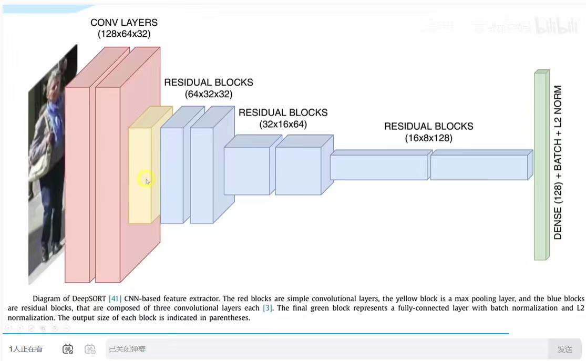
技术解析：此页面展示了 DeepSORT 的心脏——Re-ID (重识别) 网络。它的存在是为了解决仅靠“位置关联”在发生遮挡时的失效问题：
1. 网络架构：采用轻量级 CNN 架构，包含 Conv 层（红）、Max Pooling（黄）及多个 Residual Blocks（蓝）。
2. 特征映射：网络将目标图像块映射为 128 维的特征向量 (Embedding)，最后通过 Dense 层进行 Batch Normalization 与 L2 Normalization 处理，确保特征空间分布均匀。
3. 解决 ID 漂移：当目标发生遮挡或轨迹交叉时，位置信息（IoU）可能失效，此时算法通过对比两帧目标的 128 维向量距离（余弦距离），即使在位置重叠情况下也能精准锁定目标身份。
4. 工程价值：这是实现长时稳定跟踪的关键，它将“谁在什么位置”这一问题，转化为“谁的视觉特征最匹配”这一语义对比问题。
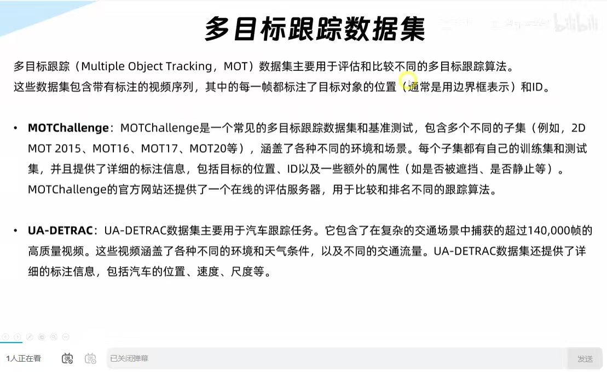
技术解析：为了在统一标准下评估跟踪算法，工业界建立了若干基准数据集：
1. MOTChallenge (通用基准)：这是 MOT 领域应用最广泛的基准，包含 MOT15/16/17/20 等多个版本。它覆盖了多样的真实场景，提供详尽的标注（位置、ID、遮挡/静止状态），并配有在线评估服务器进行公平排名。
2. UA-DETRAC (交通专用)：专门针对汽车跟踪任务，包含超过 14 万帧的高质量交通监控视频。其标注信息更聚焦于车辆特有属性（速度、尺度等），非常适合交通领域的算法研发与模型微调。
3. 工程意义：这些数据集不仅是“算法的练兵场”，其标注格式（如 MOT 格式）也成为了行业内的标准 API 接口，直接决定了算法与数据处理工具的兼容性。
技术解析：截图所示的 MOTChallenge.net 是目前多目标跟踪算法事实上的评价中心。其核心地位体现在三个方面：
1. 统一评估体系 (Unified Evaluation)：它通过一套标准化的评估代码，计算 Recall, Precision, IDF1, MOTA 等核心指标，解决了学术界指标不统一、评估代码随意化的问题。
2. 数据集标准化 (Standardized Data)：涵盖 MOT15/16/17/20 等多个序列，提供了从原始视频到全量标注（检测框、ID 轨迹）的一站式资源。
3. 竞赛导向 (Challenge Driven)：其定期组织的 Benchmark 竞赛驱动了跟踪算法从简单的卡尔曼滤波到深度学习特征提取的演进。对于自动驾驶感知研发，在该平台上验证算法指标是衡量感知模块性能是否“达到行业及格线”的关键门槛。
技术解析：此章节开启了 MOT 评估体系的深度探讨。与单一的物体检测 (Precision/Recall) 不同，MOT 的评估需要同时考虑空间定位准确度与ID 持续性：
1. MOTA (Multi-Object Tracking Accuracy)：MOT 领域最核心的指标，综合考虑了检测漏报 (FN)、误报 (FP) 及 ID 切换 (ID Switch)，反映了感知与跟踪的总体准确率。
2. IDF1 (ID F1-score)：侧重于评估跟踪器长时维持 ID 一致性的能力，在 ID 发生频繁漂移的复杂场景下，IDF1 比 MOTA 能更真实地反映跟踪质量。
3. HOTA (Higher Order Tracking Accuracy)：学术界最新提出的指标，它在定位精度与跟踪关联精度之间取得了更好的平衡，能更全面地评价感知链路的鲁棒性。
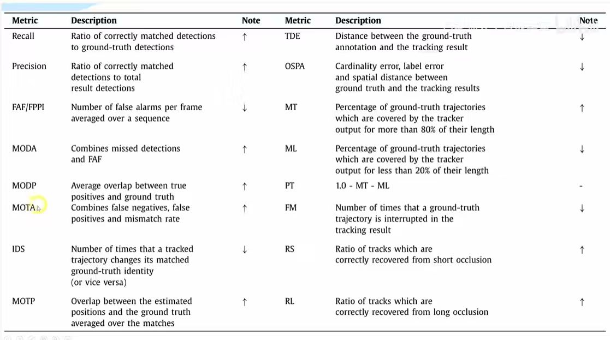
技术解析：这张表格详尽列举了评价 MOT 系统鲁棒性的多维指标。在工程落地时，我们通常依据以下逻辑进行选型：
1. 精度评估 (Recall, Precision, MOTA, MOTP)：这是感知链路的底线，衡量了算法在单帧检测准确性与多帧空间重合度上的表现。
2. 轨迹完整性 (MT, ML, PT)：这是衡量长时跟踪能力的核心。MT (Mostly Tracked) 越高代表系统对物体的持续捕捉能力越强；反之 ML (Mostly Lost) 越高则意味着系统存在严重的跟踪丢失问题。
3. 鲁棒性指标 (IDS, FM, RS, RL)：这是区分优秀与平庸算法的关键。IDS (ID Switch) 和 FM (Fragmentation) 直接反映了目标在运动过程中的 ID 稳定性；而 RS/RL (Recovery from short/long occlusion) 则体现了算法对遮挡场景的自我修复能力。
工程建议：在车载实时系统中，首选 MOTA 高且 IDS 低的算法，同时必须根据实际遮挡场景（如路口）重点监控 RS 指标。
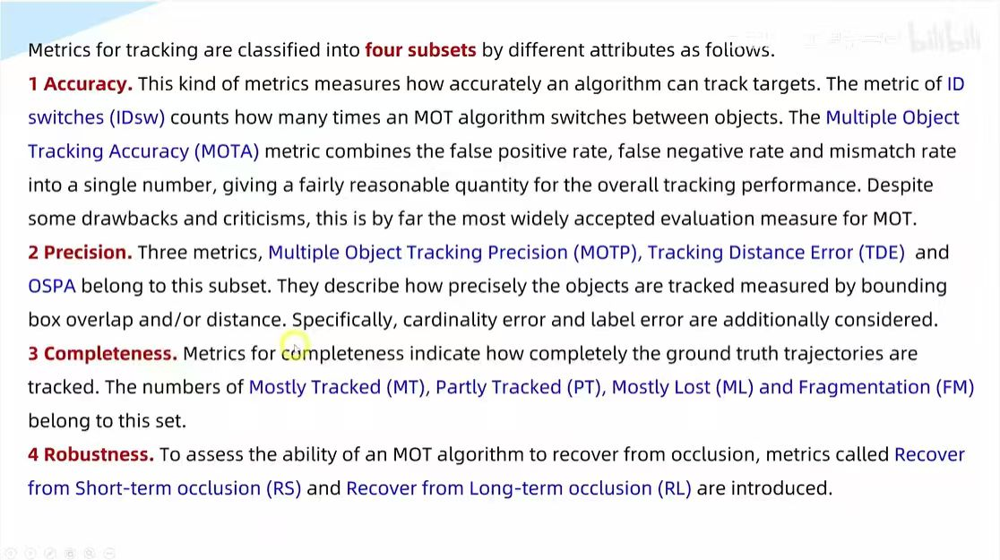
技术解析：该课件通过“四大子集”将评估指标系统化，提供了衡量 MOT 系统全方位表现的视角：
1. 准确性 (Accuracy)：关注跟踪过程中的整体质量，重点是 ID 切换频率 (IDS) 与 MOTA 指标，它是评价算法是否可用的“主基调”。
2. 精确度 (Precision)：侧重于空间匹配精度，通过 MOTP、TDE 等距离度量，衡量目标框在空间重合度上的精确水平。
3. 完整性 (Completeness)：评估轨迹的连续覆盖能力，通过 MT (Mostly Tracked) 与碎片化程度 (FM) 反映算法是否能够完整地记录目标的生命周期。
4. 鲁棒性 (Robustness)：衡量在复杂遮挡环境下的“自我修复”能力，重点观测 RS/RL (Short/Long-term Recovery) 指标，这是判断算法能否应对复杂路况的关键。
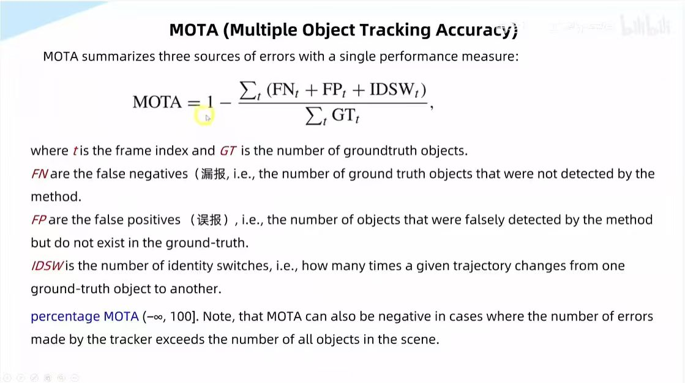
技术解析：MOTA 是最直观反映感知与跟踪综合准确性的指标，它通过一个简洁的公式汇总了三类致命错误：
1. 公式含义：MOTA = 1 - (FN + FP + IDSW) / GT。这意味着跟踪器越接近 100% (即 1)，性能越强。
2. 三类误差源：
- FN (False Negatives，漏报)：感知器漏掉了真实存在的物体，导致跟踪序列中断。
- FP (False Positives，误报)：感知器在不存在目标的位置产生了冗余检测框，消耗了计算资源并干扰逻辑。
- IDSW (Identity Switches，身份切换)：这是 MOT 特有的误差，代表 ID 在运动过程中发生跳变，反映了关联算法的逻辑错误。
3. 取值特性：MOTA 理论区间为 (-∞, 100]。若错误数量超过了场景中真实目标的总数，MOTA 会变为负数，这在算法研发初期非常常见，是性能严重不达标的信号。
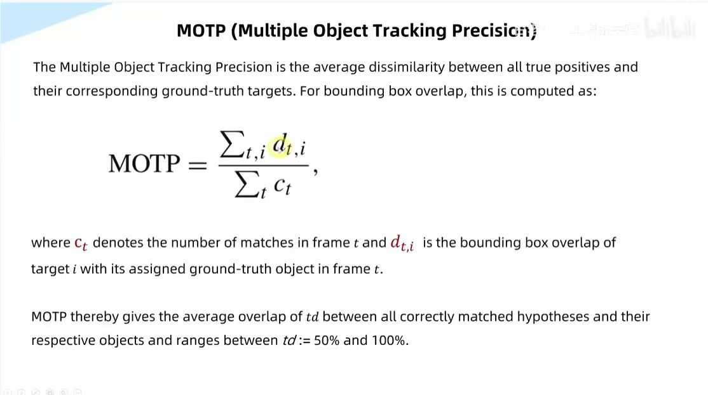
技术解析：如果说 MOTA 衡量的是系统的“完备性”，那么 MOTP 则专注于评估感知链路的“空间对齐精度”：
1. 公式含义：MOTP 计算的是所有匹配成功的目标框与其对应的真值框 (Ground-truth) 之间的平均距离/重合度差异。它反映了感知器输出的 Bounding Box 对目标物体在空间上定位得有多“准”。
2. 关键度量参数：
- $d_{t,i}$：目标框间的距离（如 IoU 的倒数或交并比差异）。
- $c_t$：匹配成功的总数，MOTP 为所有匹配成功的框进行加权平均。
3. 取值范围：MOTP 的值越高（在 50%-100% 区间内），意味着定位越精准。对于自动驾驶，MOTP 至关重要，因为定位误差会直接传导至路径规划模块，导致车辆避障偏移或轨迹抖动。
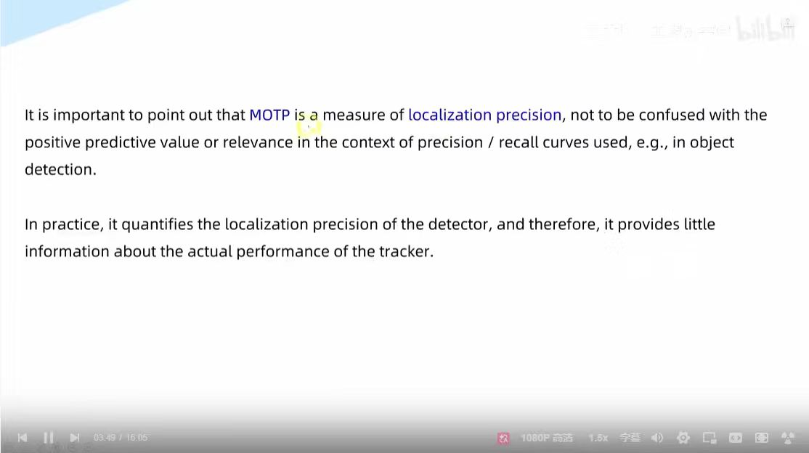
技术解析：此页面提出了一个关键的工程认知：MOTP 仅衡量定位精度 (Localization Precision)，而非跟踪性能。
1. 本质区别：MOTP 刻画的是检测器 (Detector) 输出的框与 GT 框的空间重合度，它完全独立于目标关联 (Association) 的逻辑。
2. 重要误区：切勿将其与目标检测中的 Precision (正类预测值) 混淆。它不包含任何关于“跟踪器是否跟丢”或“ID 是否切换”的信息。
3. 工程建议：在 MOT 系统评价中，MOTP 提供的信息量非常有限。如果感知模块需要优化，应关注 MOTP；但若要评估跟踪鲁棒性，必须回归 MOTA 或 IDF1 指标，不要被 MOTP 的“精确”表象所误导。
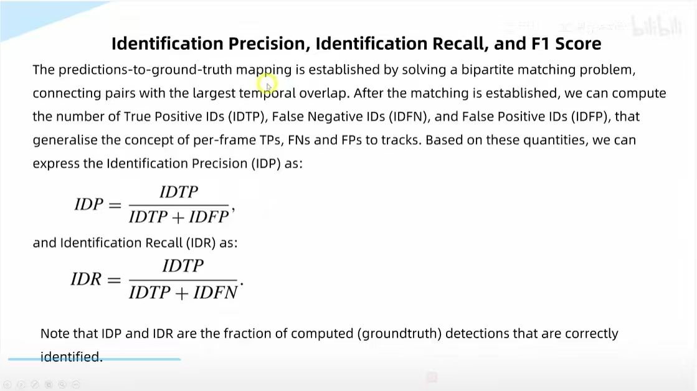
技术解析：此页面提出了 MOT 领域最核心的身份准确性度量方式，即从传统的“框级匹配”上升到“轨迹级匹配”：
1. 二部图匹配 (Bipartite Matching)：MOT 系统并非直接计算单帧的 TP/FP，而是通过求解二部图匹配问题，找出预测轨迹与真值轨迹在时间重叠上的最佳映射。
2. ID-based 指标：
- IDP (Identification Precision)：衡量预测轨迹中有多少比例能正确对应到真实的身份。它反映了系统“输出的轨迹可信度”。
- IDR (Identification Recall)：衡量真实轨迹中有多少比例被算法成功捕获。它反映了系统“捕获真实身份的能力”。
3. 工程意义：与 MOTA 不同，IDP 和 IDR 极度关注 ID 的稳定性。如果一个系统频繁发生 ID Switch，其 IDP 和 IDR 会显著下降。在自动驾驶决策中，高 IDP/IDR 意味着路径规划器能获得更加稳定的长时目标语义信息，从而避免因 ID 抖动导致的决策失误。
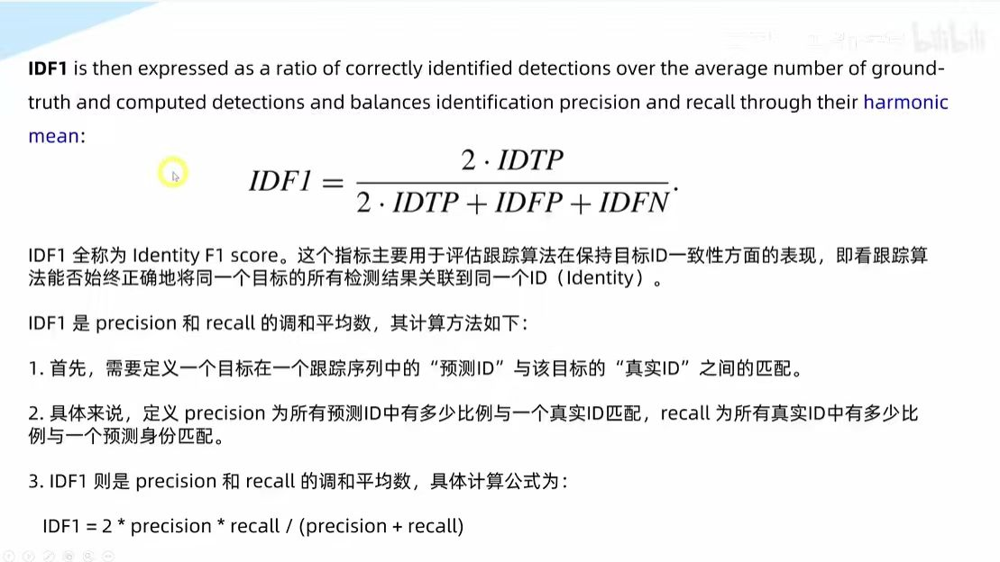
技术解析：此页面清晰地阐述了 IDF1 的数学定义及其在多目标跟踪中的工程重要性：
1. 定义本质：IDF1 (Identity F1-score) 是 ID-based Precision 与 Recall 的调和平均数。与 MOTA 关注单帧检测准确度不同，IDF1 极度关注“身份的持续性”。
2. 核心公式：
- IDF1 = 2 * IDTP / (2 * IDTP + IDFP + IDFN)。其本质是在轨迹空间上评估算法对物体身份标识的准确性。
3. 工程解读：
- Precision (IDP)：衡量系统预测轨迹中，身份匹配的纯度。
- Recall (IDR)：衡量系统对所有真实身份轨迹的捕获覆盖率。
4. 为什么 IDF1 比 MOTA 更重要：在自动驾驶长时感知中，若发生频繁的 ID 切换，MOTA 可能依然较高（因为框的位置是对的），但 IDF1 会急剧下降，直接导致下游规划器将当前目标识别为“新目标”并重新规划避障，造成严重的轨迹震荡。
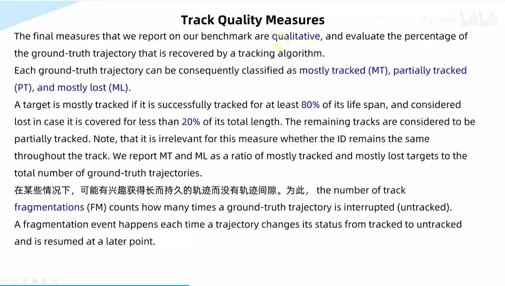
技术解析：此页面介绍了轨迹质量 (Track Quality) 的三类度量方式，它们直接反映了跟踪系统的连续覆盖能力：
1. 轨迹覆盖率指标：
- MT (Mostly Tracked)：成功覆盖率 > 80% 的轨迹，代表高质量跟踪。
- ML (Mostly Lost)：覆盖率 < 20% 的轨迹，代表跟踪严重失败。
- PT (Partially Tracked)：剩余部分，处于“跟丢-重连”频繁波动的中间态。
2. FM (Fragmentation，轨迹破碎度)：该指标度量一条轨迹从“跟踪”状态变为“失踪”状态，随后又被“恢复”的次数。FM 越高，代表感知链路越不稳定，会引发下游决策器的轨迹预测震荡。
3. 核心结论：无论 ID 是否发生切换，只要目标在空间上被覆盖，就计入轨迹质量指标。在工程落地时，我们追求高 MT，低 ML 和尽可能趋近于 0 的 FM。
技术解析：在卡尔曼滤波 (Kalman Filter) 预测与关联阶段，马氏距离是度量检测框与轨迹状态相似度的核心工具：
1. 数据分布感知：欧氏距离假设所有特征维度同等重要且相互独立，而马氏距离通过引入协方差矩阵 (Covariance Matrix)，自动根据目标的运动不确定性（如横向与纵向运动的差异）进行缩放。
2. 解决维度相关性：在自动驾驶中，目标的坐标 (x, y) 与速度 (vx, vy) 高度耦合，马氏距离能有效消除这种维度间的相关性干扰，使匹配逻辑更符合物理约束。
3. 工程价值：它将空间距离归一化，使得不同置信度下的目标匹配具有可比性，是卡尔曼滤波中实现门限判定 (Gating)（判断一个观测是否属于该轨迹）的基石。
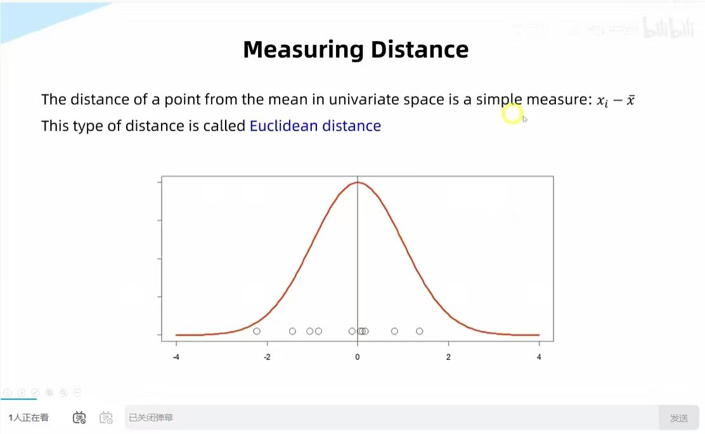
技术解析：此页面介绍了最基础的距离度量——欧氏距离，它在 MOT 的数据关联阶段有着特定的局限与用途：
1. 定义简单：即空间点到均值的直线差值 ($x_i - \bar{x}$)，假设了数据的各维度是均匀且无相关性的。
2. 局限性：在自动驾驶复杂的感知场景中，目标物体（如车辆、行人）的运动特征通常呈现为椭圆分布（不同方向的不确定性差异巨大），使用欧氏距离会导致匹配错误。
3. 工程定位：欧氏距离仅适用于初始匹配阶段或特征维度完全解耦的简单场景。作为关联算法的基石，它为理解马氏距离的复杂协方差修正提供了一个极简的对比参照。
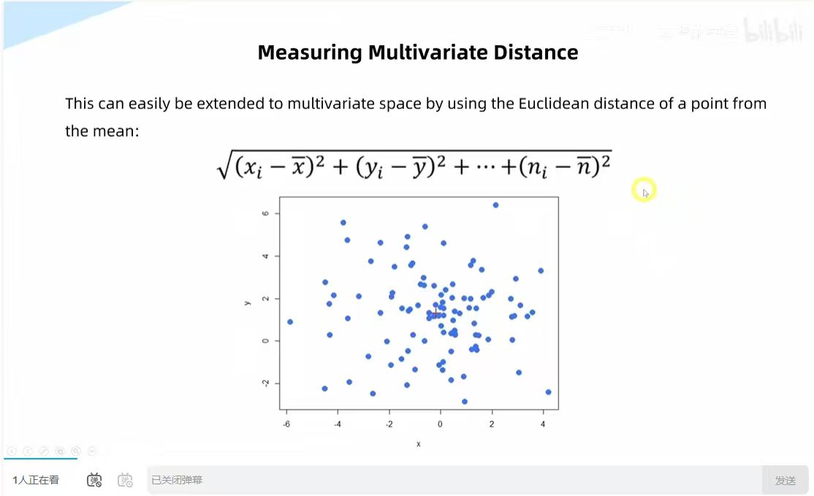
技术解析：此页面展示了将单维距离扩展至多变量空间的基础方法：
1. 数学扩展：利用多维欧氏距离公式 sqrt((xi - x_bar)^2 + (yi - y_bar)^2 + ... + (ni - n_bar)^2)，在 N 维特征空间中量化样本点与均值中心点的直线距离。
2. 直观映射：图中通过 N=2 (x, y) 的分布图，展示了点云数据围绕中心均值 (Mean) 的弥散状态，这是判断数据样本是否属于当前簇 (Cluster) 的基础数学模型。
3. 工程局限：当多变量间存在相关性（即数据点云呈现出非圆形的椭圆拉伸分布）时，仅使用欧氏距离会导致严重的误匹配。这为后续引入马氏距离（考虑协方差）提供了必然的逻辑起点。
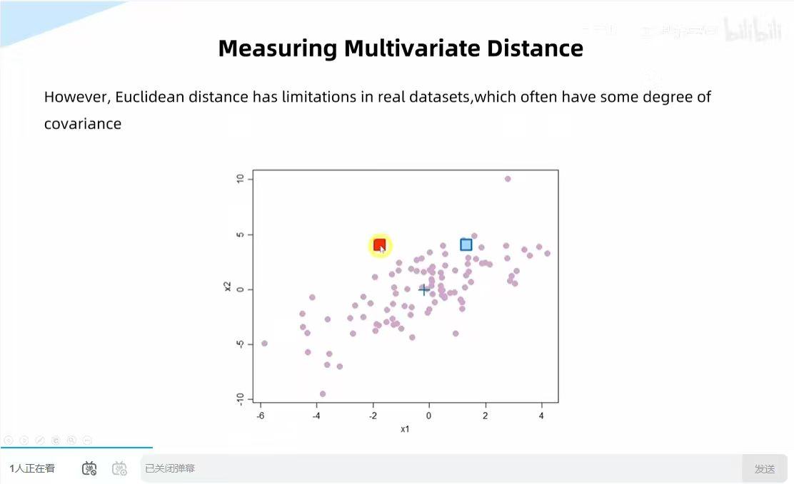
技术解析：此页面通过直观示例揭示了 MOT 关联算法中最常见的坑：协方差带来的维度偏见。
1. 数据分布特点：如图所示，数据点簇呈现明显的“椭圆拉伸”趋势，这说明变量 $x_1$ 和 $x_2$ 存在强相关性，即具有一定的协方差 (Covariance)。
2. 匹配误区：若使用欧氏距离（假设数据点以圆心等概率均匀分布），图中红色方块和蓝色方块到中心点的直线距离虽然相等，但显然蓝色方块更符合当前点簇的分布逻辑。红块虽然离中心稍近，但它落在点云的“空隙区”，属于离群点。
3. 工程启示：在多目标跟踪的关联匹配中，如果我们忽略数据的协方差，仅依赖空间直线距离，就会产生大量的误关联。因此，必须引入马氏距离，将空间分布“拉伸/旋转”回标准的圆形分布，从而准确量化目标在该方向上的真实概率距离。
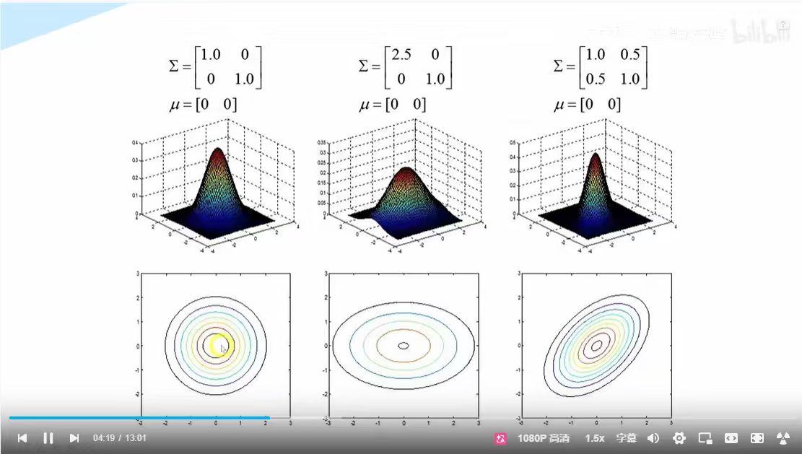
技术解析：此图通过三个经典案例，直观展示了协方差矩阵 $\Sigma$ 对多维高斯分布 (Multivariate Gaussian) 形态的决定性影响：
1. 标准正态分布 ($\Sigma = [1,0; 0,1]$)：当矩阵为单位阵时，数据呈完美的各向同性（圆形），此时欧氏距离与马氏距离在物理意义上等价。
2. 尺度缩放 ($\Sigma = [2.5,0; 0,1]$)：当改变对角线元素时，数据簇会在对应维度上产生拉伸 (Scaling)。椭圆主轴与坐标轴重合，说明变量间依然独立，但置信度区间被改变。
3. 变量耦合 ($\Sigma = [1,0.5; 0.5,1]$)：当非对角线元素不为 0 时，说明变量间存在相关性 (Correlation)。分布呈现出倾斜的椭圆形态。此时，若使用欧氏距离进行关联匹配，会在非主轴方向产生严重的偏差。
工程总结：在卡尔曼滤波中，预测状态的协方差矩阵 $\Sigma$ 决定了我们在匹配观察值时，“椭圆”的形状与方向。这就是为什么马氏距离必须使用 $\Sigma^{-1}$ 进行加权修正的根本原因。